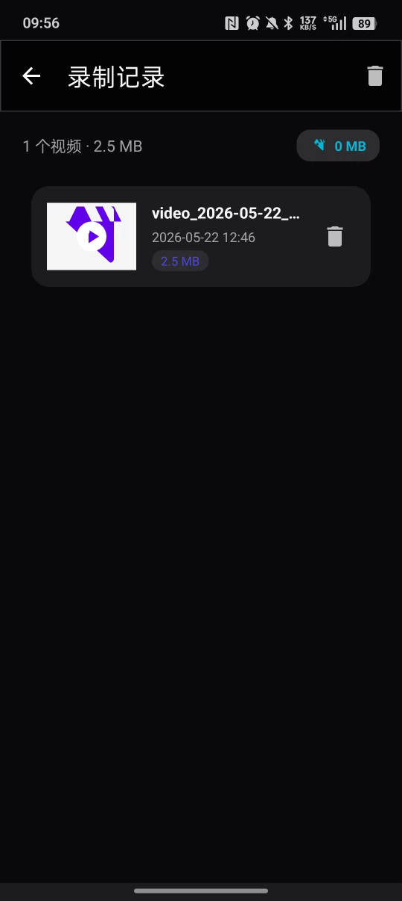
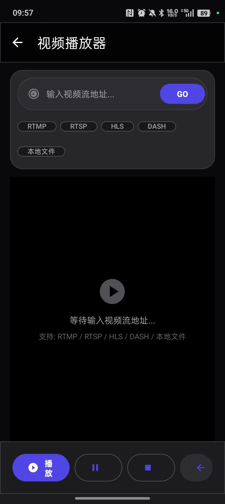
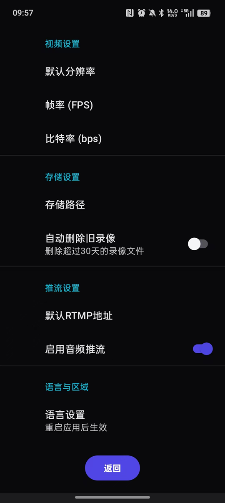

专为具身智能（Embodied AI）训练数据采集设计。通过手机第一视角摄像头，结合 AI 双手检测技术，实现操作视频的自动化采集与推流。当检测到双手进入画面时自动开始录制或推流，双手离开后自动停止 —— 真正的「佩戴即采，动手即录」。
从第一视角采集到 AI 双手检测触发录制，提供完整的具身智能数据采集能力
基于 MediaPipe Hand Landmarker，当检测到双手同时进入画面时自动开始录制或推流，双手离开后自动停止。专为第一视角操作视频采集优化。
手机佩戴式第一视角摄像头采集，模拟人类操作者视角，为具身智能训练提供高质量第一人称操作数据。
支持前置和后置摄像头独立管理，可同时开启双摄模式进行前后画面同步录制。
支持 RTMP、RTSP、SRT、UDP 四种主流推流协议，适配各种直播和监控场景。
最高支持 1080P 高清录制，后台持续录制服务，熄屏后依然正常工作。
视频录制时自动同步采集麦克风音频，推流时也可选择是否携带音频。
无需中转服务器，通过 RTSP 协议实现设备间点对点直连传输。
支持 WebDAV 协议自动上传录制文件到 NAS 或云存储服务器。
基于 Google MediaPipe，支持双手同时检测、人脸检测、姿态检测（33 关键点）、人像分割。双手检测是第一视角自动录制的核心能力。
AI 检测到目标时自动开始录制或推流，目标消失后自动停止，支持延迟防误触发。
六大核心优势，让第一视角操作视频采集更高效
通过第一视角操作视频解决具身智能操作难题。大规模人类第一视角操作视频数据作为主要训练来源，本软件是专业的第一视角视频采集工具。
基于 MediaPipe Hand Landmarker 实现双手同时检测。只要检测到双手就能自动开始录制或推流，双手离开画面后自动停止 —— 佩戴即采，动手即录。
基于 Google Media3 ExoPlayer 构建，支持 RTMP / RTSP / HLS / DASH / 本地文件等多种格式播放。
分辨率（720P/1080P）、帧率（15/24/30fps）、比特率（1000-8000kbps）均可自由调节。
采用 Material Design 3 设计语言，底部导航栏操作便捷，实时状态指示器一目了然。
MIT 开源许可，完全免费使用。内置中文/英文双语界面，一键切换语言。
简洁直观的操作界面，让您快速上手



基于业界领先的 Android 技术栈构建
Google 现代摄像头 API
专业视频播放引擎
高效音视频编码器
Google AI 检测框架
异步编程框架
现代 UI 设计系统
清晰的代码结构
类型安全的视图访问
高性能 HTTP 客户端
开始使用第一视角操作视频采集神器，为具身智能贡献训练数据